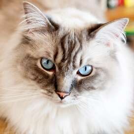
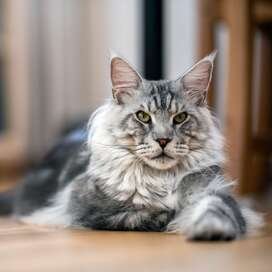
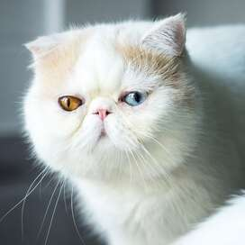
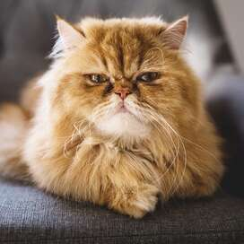
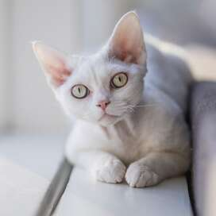
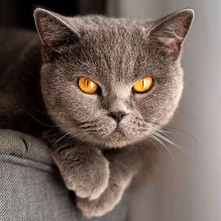
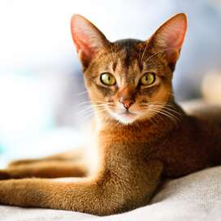
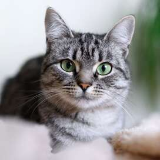
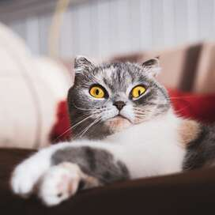
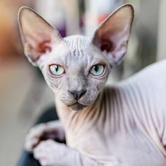

CAT BREEDS
| BREED NAME |
PHOTO |
DESCRIPTION |
| Ragdoll |
 |
These felines have sparkling blue eyes and long mane. The ragdoll cats love cuddles and are the perfect kitty companion.
|
| Maine Coon Cat |
 |
These cats are large and are known to be the friendliest and lovable cats in the world. |
| Exotic |
 |
The exotic cats have low-maintenance manes. Minimal upkeep will keep these animals looking fancy. |
| Persian |
 |
Persian cats have flat faces with flowing fur. Despite their looks, Persians don't need a lot to be joyful. |
| Devon Rex |
 |
This breed loves being with people, other pets, or play things, they hate being alone and prefer to have company. |
| British Shorthair |
 |
British shorthairs are like a teddy bears in both appearance and personality. |
| Abyssinian |
 |
One of the oldest cat breeds, the Abyssinian has an elegant appearance with lavish coloring, lithe bodies, and long ears. |
| American Shorthair |
 |
The American shorthair have the ability to protect against rats and other pests. They are cat hunters but could be really affectionate. |
| Scottish Fold |
 |
Known for its "folded" ears with their big round eyes. The cat is often described that it is owl-like. |
| Sphynx |
 |
A breed that commonly doesn't cause allergies since they are a hairless cat. |
Go back to the top